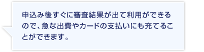
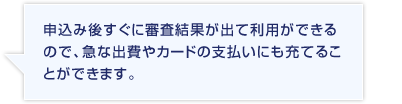
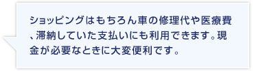
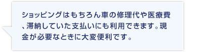
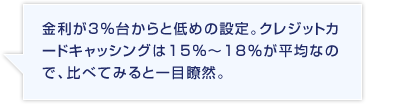
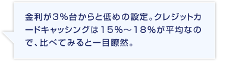

お買物や急な出費などに備えてクレジットカードを持ちたいのに、審査に通らない…。
申込んではみたけれど審査に落ちてしまった…。そんな理由で未だにカードを持てていない方は、クレジットカードよりもより利用できる確率が高いカードローンを選んでみませんか。
カードローンはクレジットカードのキャッシングよりも利用額が大きく、低金利なのに、なぜかクレジットカードよりも審査合格率が高くなっています。
その理由はなぜなのか！？
それは「内容は似ていてもカードローンとクレジットカードはまったく違う商品だから」です！
カードローンはクレジットカードのキャッシング機能に似ているのに、どうして審査基準がクレジットカードと異なるのかというと、「カードローンは借り換えやおまとめローンにも使われている商品だから、クレジットカードの審査に落ちても、他社に借入があってもそのことを前提に審査をしてくれる」からです！しかもクレジットカードと違って、最短即日で審査と融資を行ってくれるので、待つことがありません！
だからクレジットカードの審査に落ちてしまったと嘆くことはありません！
審査に落ちても、カードの利用枠を使い切っていても、まだカードローンという手が残っています！


 
 
 
クレジットカードのキャッシングはカード1枚とATMがあれば利用できる、とても便利な機能ですが、2010年の6月より新規申込でのキャッシング枠50万円以上、その他の貸金業からの借入総額100万円以上の場合「収入証明書」が必要となりまりました。
なのでクレジットカードのキャッシングを時々利用している方で、キャッシング機能の付いたクレジットカードを持ちたいとき、場合によっては収入証明書を求められることがあります。
でも！
カードローンのなかでも人気の高い【オリックス銀行カードローン】は、
このままWebから申込むと、最短即日審査、契約後、最短即日融資に対応してくれて、300万円以下の利用可能枠なら収入証明書なしで利用できるから手続きがとてもスムーズです！

カードローンはカードの利用があっても、他社に借入があっても申込め、さらに即日利用も可能な商品だからこそ、申込資格が気になってきます。
クレジットカードのなかにはアルバイト、パート、派遣社員だと審査が厳しいのではというイメージを受けるものがありますが、カードローンなら【オリックス銀行カードローン】のように、継続した収入があればアルバイトやパートの方でも申込ができるものもあります。
また勤続年数や収入金額が不安であっても、コンスタントに収入があるならカードローンに申込むことができますので、勤続年数が増えるまで…、昇給があるまで…、と申込を我慢する必要がありません。
クレジットカードの使い過ぎで支払いが追いつかない。
クレジットカードの利用した分を返済して、ショッピングやETCに使いたい。
お祝い事や飲み会でどうしても現金が必要。
…などなど、カードローンは現金を扱える商品なので、一度申込をしておくといざというときに使えてとても便利です。
 カードローン |
 クレジットカード |
|
|---|---|---|
| 利用先 | 急な出費やクレジットカードの返済金額が足りない時にも使うことができる | 基本的にはショッピング用 |
| 使い方 | ATMに行かなくても口座振込してもらえる | ATMでキャッシング |
| 返済 | 月々3000円から返済することもできる あるとき払いもOK |
キャッシングは1万円から返済など 決められた金額で返済していく |
| 利用可能枠 | 利用額が大きいのでやりくりしやすい | 利用額が少ないのでやりくりは大変 |
またカードローンはATMから返済できたり、
返済金額が月3000円からとクレジットカードよりも緩やかになっているのも特長です。
カードローンは【オリックス銀行カードローン】以外にもモビットやプロミスも扱っていて、それぞれに特長がありますから、利用するときは使いやすいところを選ぶようにしましょう。
【モビット】はWeb申込を選ぶと利用まではネットとメールだけで手続きができ、
電話連絡や郵送物もありません。もちろん即日対応！
【プロミス】はWeb申込を選ぶと当日振込も可能。審査結果はメールで受け取ることもできます。